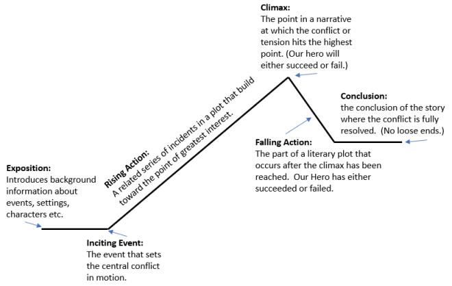
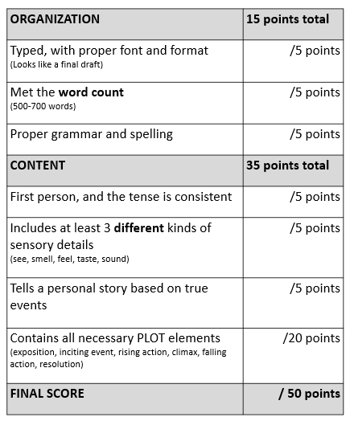

Personal Narrative
A Narrative is a story. A Personal Narrative is a story that is based on a true personal experience. The goal of this assignment is to either describe a choice the student made, or to describe something they learned from a particular experience.
Students will choose their own experience to write. This narrative must be written in first person, must include at least 3 different kinds of sensory details (not just 3 visual sensory details, but different kinds), and must contail all the essentail plot elements for a good story.
The Brainstorming and Rough Draft for this assignment will be due November 1st.
The Final Draft of this assignment will be due November 8th.
Here is the rubric I will use to grade this assignment:
